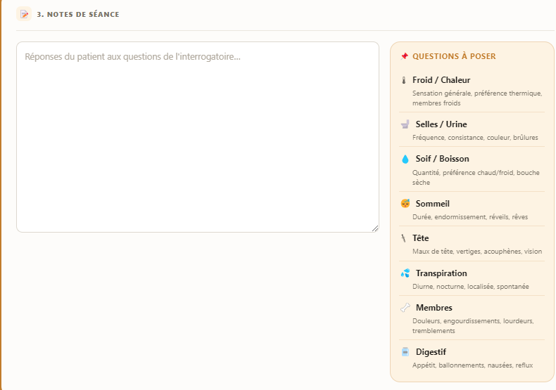
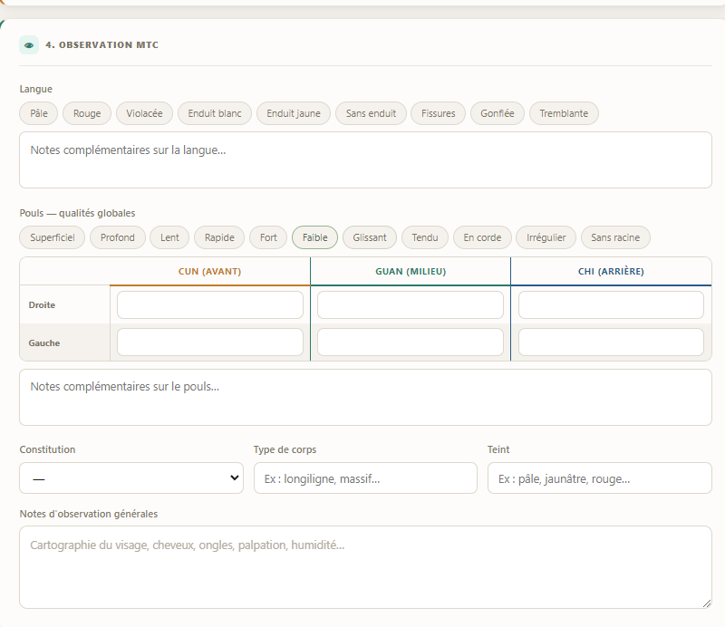
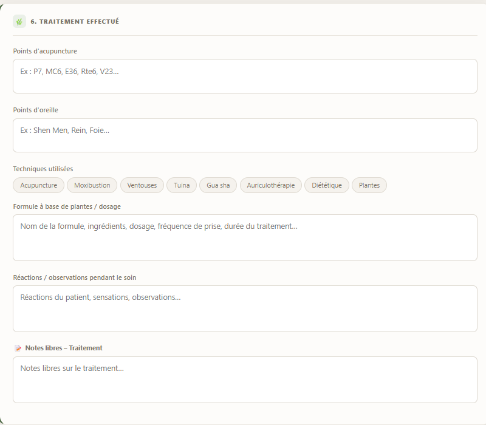
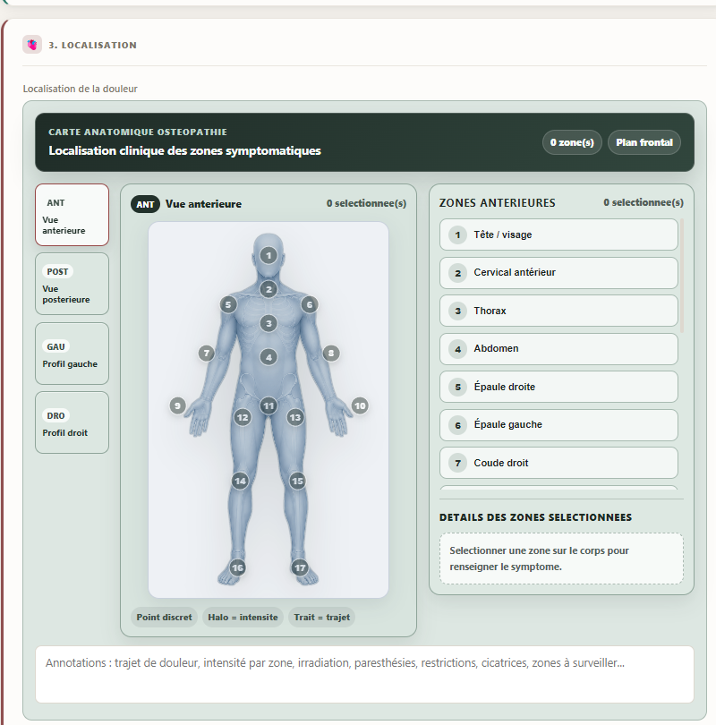

Agenda & Google Calendar
Gérez vos rendez-vous dans Synoria et synchronisez votre agenda Google si vous le souhaitez.
Synoria réunit dossiers patients, séances, agenda et facturation dans un logiciel adapté à la MTC, avec vos données patients stockées localement sur votre ordinateur.
14 jours gratuits · Carte bancaire requise · Aucun prélèvement pendant la période d'essai

Entre l'anamnèse, l'observation de la langue et du pouls, le bilan des cinq éléments et le suivi du traitement sur plusieurs séances, garder une vision cohérente d'un patient devient vite difficile avec des outils génériques. Synoria structure chaque étape du bilan énergétique dans un seul dossier, consultable à tout moment.
Synoria reproduit la logique d'un bilan MTC : sélection rapide des caractéristiques de langue, puis tableau des pouls avec les correspondances CUN / GUAN / CHI en positions droite et gauche — pas une simple zone de texte libre.

Les techniques utilisées se sélectionnent en quelques clics parmi une liste dédiée à la MTC. Les points d'acupuncture et les points d'oreille se consignent librement à chaque séance. Le prochain rendez-vous se planifie sans quitter la fiche de séance et apparaît directement dans le calendrier.

Synoria est conçu pour une utilisation locale : mot de passe, chiffrement de la base, verrouillage automatique, sauvegardes chiffrées et registre RGPD intégré.
Synoria stocke localement les dossiers patients sur votre poste. Aucun cloud Synoria n'est obligatoire pour leur stockage.
Base de données protégée par AES-256-GCM et dérivation PBKDF2 du mot de passe.
Consentements patients, journal d'accès et registre de traitement Article 30.
Exports chiffrés, vérification d'intégrité et restauration des données.
Le formulaire MTC s'intègre dans une application complète de gestion de cabinet.
Gérez vos rendez-vous dans Synoria et synchronisez votre agenda Google si vous le souhaitez.
Créez vos factures et suivez leur règlement.
Suivez votre activité et exportez vos données comptables.
Recevez sur votre ordinateur des rappels de vos prochains rendez-vous.
Sauvegardez vos données et vérifiez l'intégrité de vos sauvegardes.
Exportez vos informations et utilisez les outils intégrés de suivi RGPD.
En complément du formulaire MTC, Synoria inclut un formulaire "Suivi douleur" avec localisation sur schéma corporel — utile pour les consultations centrées sur le soulagement d'une douleur précise.

Le formulaire MTC est déjà intégré à Synoria. Si votre manière de travailler nécessite un formulaire, des sections ou des champs spécifiques, vous pouvez nous contacter afin d'étudier la création d'un plugin personnalisé adapté à votre besoin.
Création de plugin personnalisé sur devis.
Nous contacterRetrouvez le détail complet des fonctions incluses dans chaque abonnement.
Voir tous les tarifsEssai gratuit 14 jours · Carte bancaire requise
Oui. Le formulaire MTC intégré reprend les sections classiques d'un bilan énergétique : langue, pouls, cinq éléments, diagnostic MTC, points d'acupuncture, plantes et plan de suivi.
Non, vos dossiers patients ne sont pas stockés sur nos serveurs : ils restent sur votre ordinateur, chiffrés par AES-256-GCM. Si vous choisissez d'activer un service externe optionnel, comme Google Calendar, les données nécessaires à cette fonctionnalité peuvent être transmises au service concerné. Les paiements sont traités par Stripe.
Oui. Depuis Paramètres → Plugins, vous pouvez changer de formulaire à tout moment. Les séances passées restent lisibles avec le formulaire utilisé à l'époque.
Rien n'est perdu. Chaque séance conserve les informations telles qu'elles ont été saisies au moment de sa création, même si vous changez ensuite de formulaire. Vos séances passées restent donc entièrement consultables.
Oui. Une carte bancaire est demandée lors de l'inscription, mais aucun prélèvement n'est effectué pendant les 14 jours d'essai. Vous pouvez annuler avant la fin de cette période si vous ne souhaitez pas poursuivre.